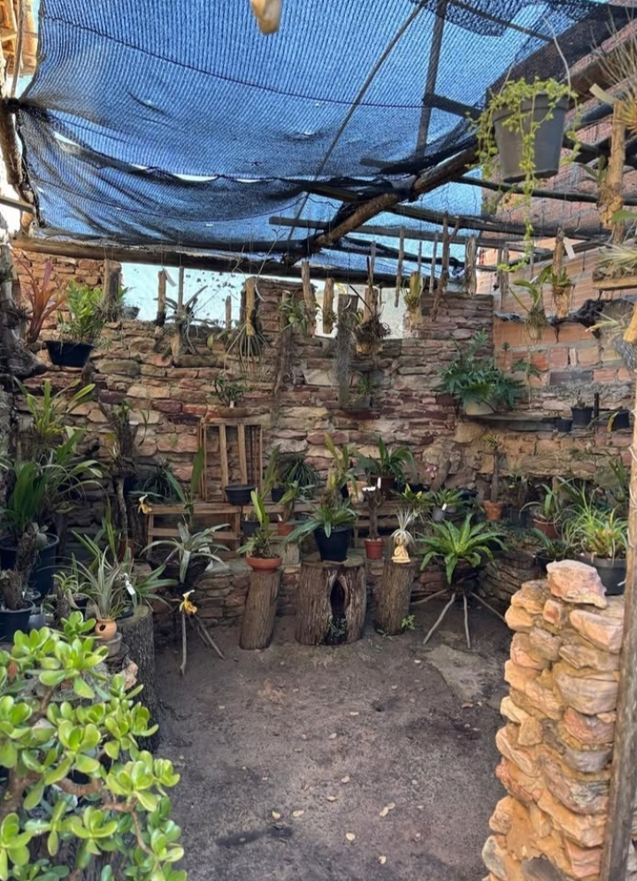
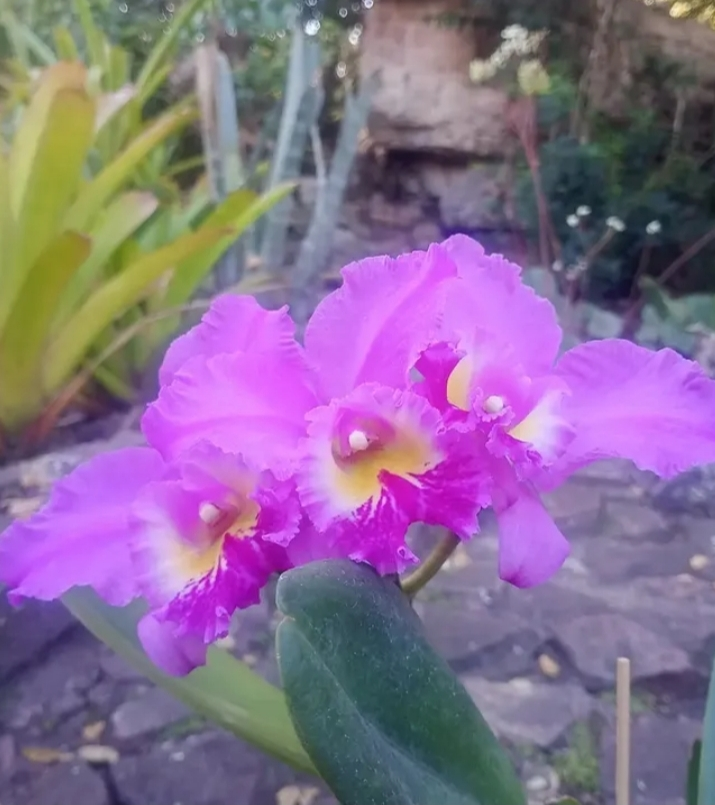
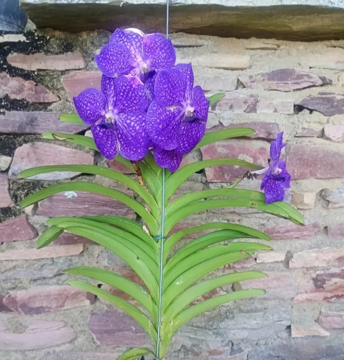
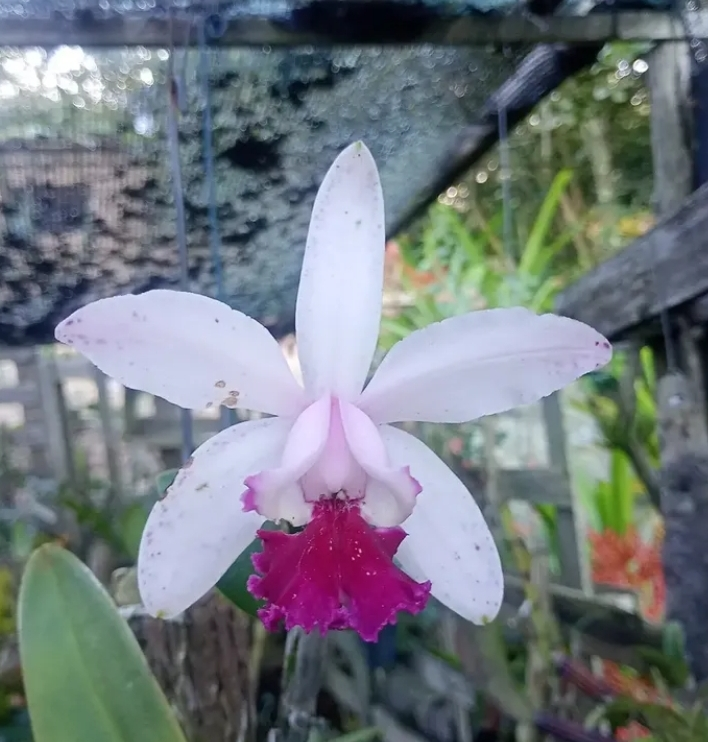
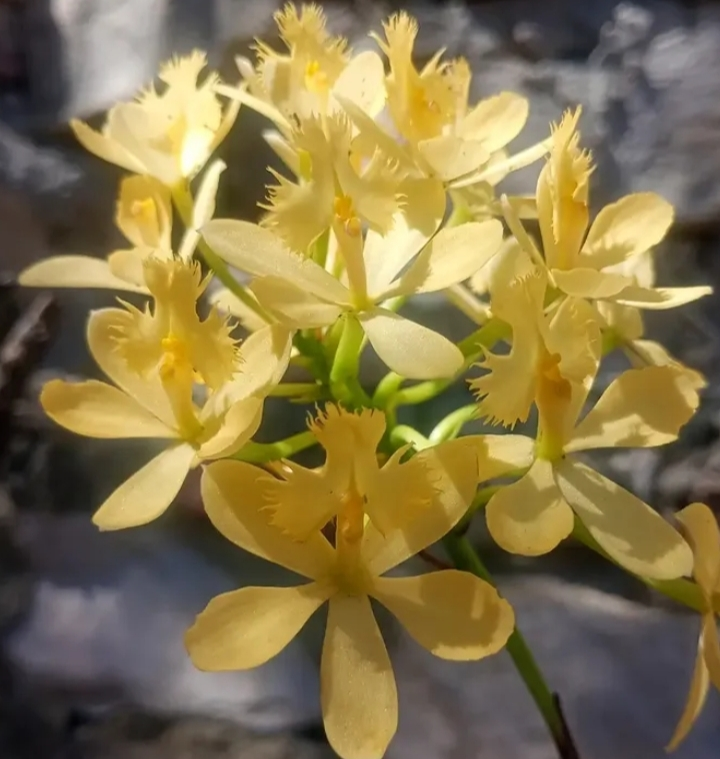
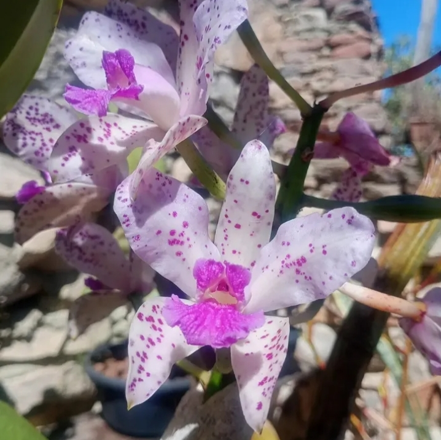
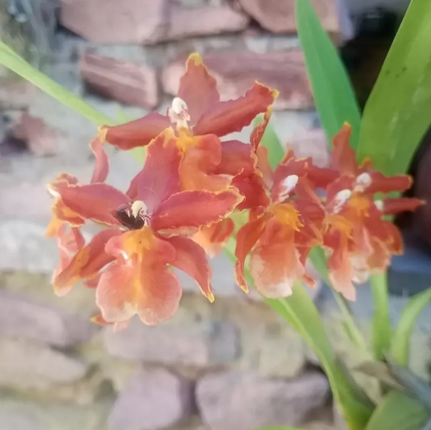
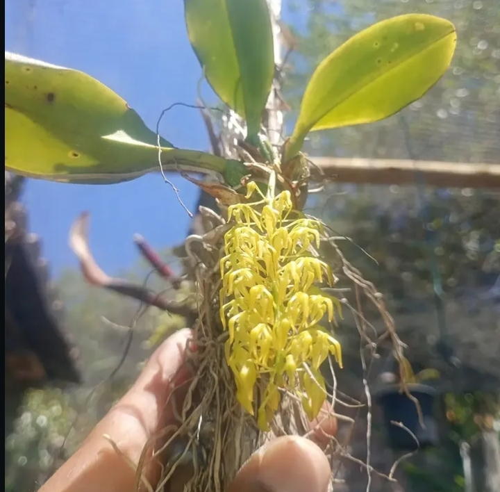
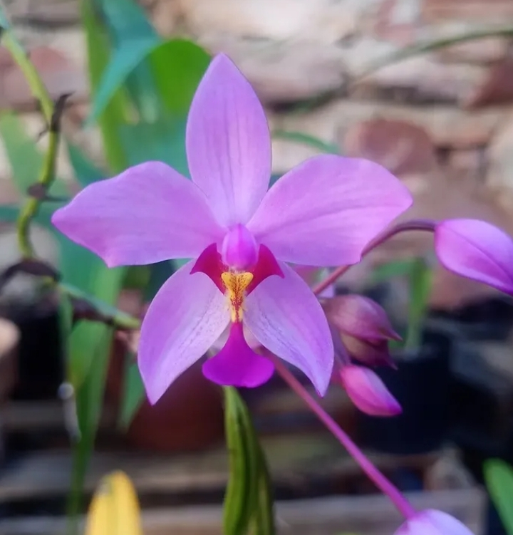
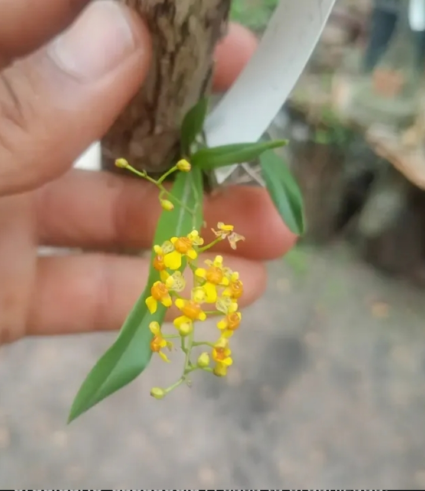

Deixe a natureza
surpreender você.
Um convite para descobrir de perto a delicadeza, as cores e a diversidade das orquídeas no Orquidário Capadócia.

UM LUGARESPECIAL
Um refúgio de beleza natural.
Entre plantas, flores e detalhes surpreendentes, o Orquidário Capadócia convida você a viver uma experiência tranquila em contato com a natureza.
Venha passear pelo espaço, observar as orquídeas de perto e descobrir a beleza que existe em cada espécie.
Planeje sua visita →Flores que encantam em cada detalhe.
Conheça algumas das orquídeas registradas no Orquidário Capadócia.









Olhe de perto.
Encante-se.
Um passeio pelo orquidário é uma oportunidade de observar a natureza com calma e encontrar beleza nos pequenos detalhes.
Venha conhecer ↗O Orquidário em reportagem.
Assista ao vídeo e veja um pouco mais do nosso espaço.
Sua visita começa com um convite.
Entre em contato para combinar o melhor horário e conhecer o Orquidário Capadócia pessoalmente.
Agendar pelo WhatsApp ↗LOCALIZAÇÃOMorro do Chapéu · Bahia
AGENDAMENTO+55 71 9942-5797
HORÁRIOSConsulte a disponibilidade pelo WhatsApp